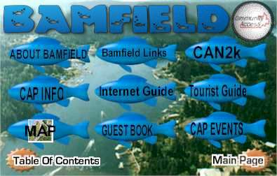

Bamfield is a small community (approximately 450 people) located in the Barkley Sound, on the west coast of Vancouver Island. Bamfield is centered in a pristine environment ideal for hiking, fishing, kayaking, and other recreation activities. If you are planning to visit Bamfield, or hike the West Coast Trail, be sure to check out our Tourist Guide, and searchable business directory.
As a Community Access Site run out of the Bamfield Community School (k-12), we offer free computer/internet use and training to the public. Besides that, we create a positive community presence on the internet.
This site is also dedicated to spreading awareness to the potential danger that the year 2000 brings upon technology. We are supporters of the CAN2K campaign and hold information sessions as well as broadcasting information via local television.
[FrontPage Image Map Component]
Find out what made the town what it is today
This is still under construction. Broken links will be fixed eventually. |
| Related Links | |
| . | ONSite Vancouver Island - Offers a great guide to Bamfield |
| . | Vancouver Island Abound Out Door Travel Page: Bamfield -Very informative, worth checking out. |
| . | Bamfield Chamber Of Commerce - More information on Bamfield |
Last Updated June 1999
bamfield, Bamfield, BC, bc, B.C., British Columbia, Canada, Hiking, hiking, kayaking, artists, art, business, transportation, CAP, Community Access, Community Access Program, Vancouver Island, Adventure, west coast trail, broken islands, Barkley Sound, BMS, marine, pacific ocean, accommodation, Free Internet Access, West Coast, West Coast Trail,